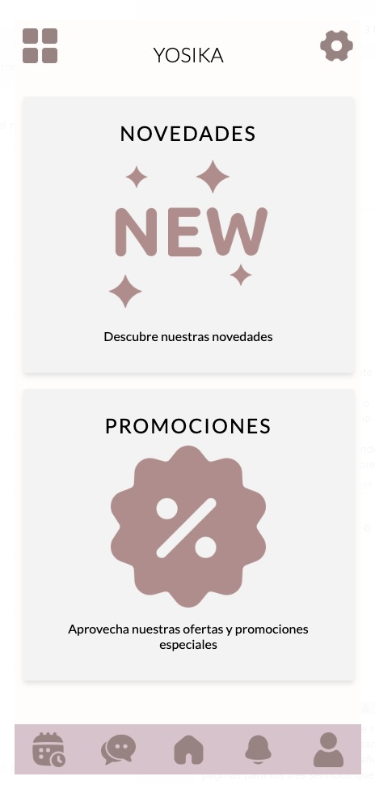
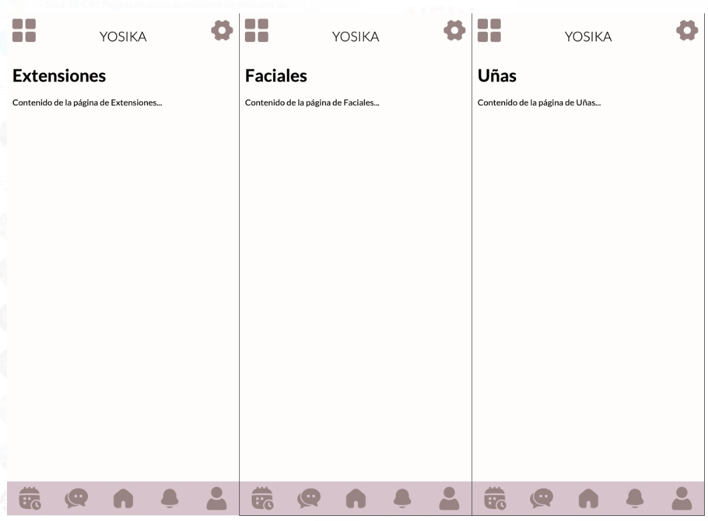
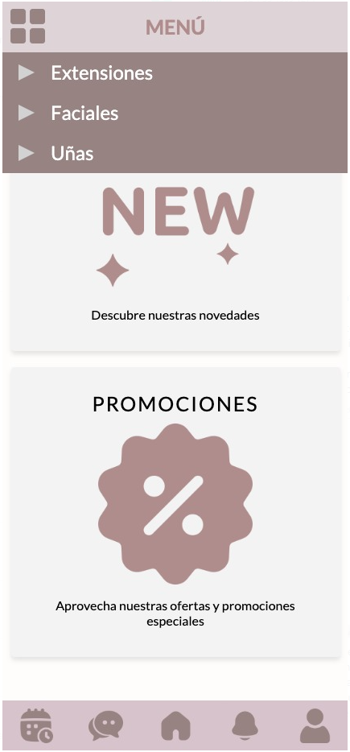

El cliente requería que las novedades y promociones del establecimiento aparecieran en la página de inicio de la aplicación, por lo tanto, se desarrollaron dos apartados donde se podrá colocar un título, una breve descripción y una imagen.
El cliente requería que cada servicio se visualizara de manera independiente, por lo tanto, se añadieron las páginas para los tres servicios que se ofrecen para posteriormente colocar el contenido de la página.
Se enlazaron las rutas con las páginas de cada servicio en el menú.
